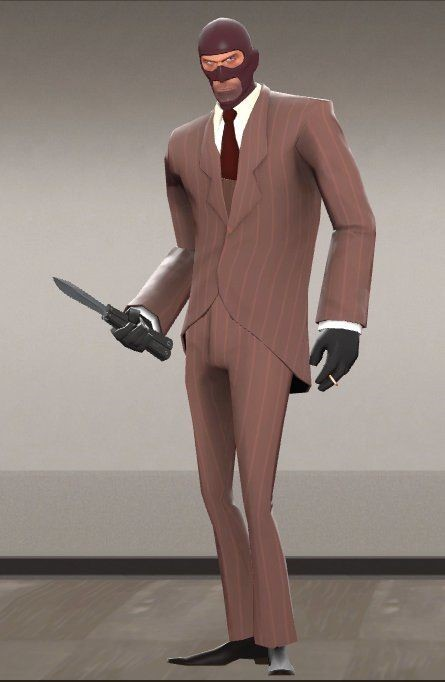

Gameplay

Hailing from an indeterminate region of France, the Spy is an enthusiast of sharp suits and even sharper knives. Using a unique array of cloaking watches, he can render himself invisible or even feign his own death, letting him infiltrate enemy lines with little chance of detection. His Disguise Kit lets him impersonate any class on either team. With enough skill in the art of deception, the Spy can momentarily fool enemies with his disguise, lulling them into a false sense of security. When the time is right, he can emerge from the woodwork to strike a killing blow, stabbing his unsuspecting "teammate" in the back. A backstab with any of the Spy's knives will kill most foes in a single hit — provided they are not under the effects of any type of invulnerability.
In addition to being able to swiftly assassinate key enemies, the Spy can disable and destroy Engineer-constructed buildings with his Sapper. Once attached, the Sapper disables and slowly drains health from the enemy building, eventually resulting in its destruction. However, a Sapper can be removed by an Engineer, or Pyro wielding the Homewrecker, Maul, or Neon Annihilator.
The Spy has the unique ability to use enemy Dispensers while disguised, and use enemy Teleporters at any time, enabling him to replenish his health and ammo behind enemy lines and enter Engineer nests undetected. Should any enemy be unfortunate enough to be standing on a Teleporter exit as the Spy teleports, they will be telefragged and die instantly. However, the Spy still collides with enemy buildings, even when disguised.
Medics can both heal and apply ÜberCharge effects to disguised enemy Spies. Particularly adept Spies can use this to their advantage by coercing enemy Medics into healing them, allowing him to more easily pull off stabs amidst a group of enemies.
Speaking of health and healing here's a chart which contains the spies maximum hitpoints in different situations to help you visualize just how fragile of a class he actually is: